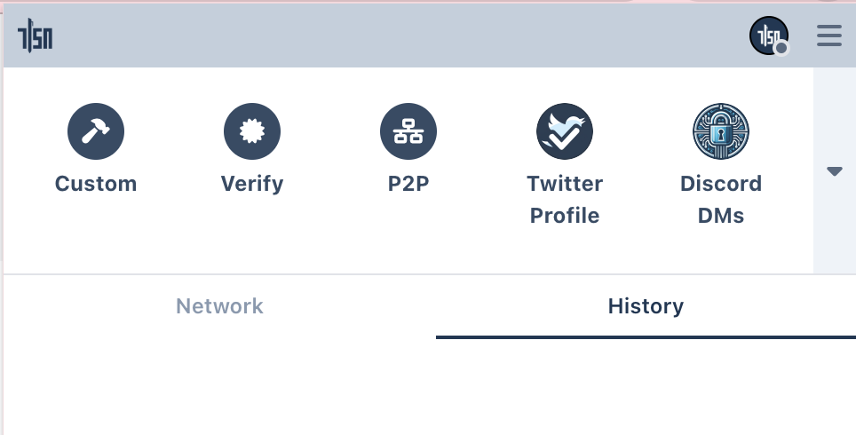

TLSNotary Browser Extension
In this quick start we will prove ownership of a Twitter account with TLSNotary's browser extension.
Optionaly you can install and configure a local websocket proxy and local notary server.
Install Browser Extension (Chrome/Brave)
The easiest way to install the TLSN browser extension is to use Chrome Web Store.

Alternatively, you can install it manually:
- Download the browser extension from https://github.com/tlsnotary/tlsn-extension/releases/download/0.1.0.1000/tlsn-extension-0.1.0.1000.zip
- Unzip
⚠️ This is a flat zip file, so be careful if you unzip from the command line, this zip file contains many file at the top level - Open Manage Extensions: chrome://extensions/
- Enable
Developer mode - Click the Load unpacked button
- Select the unzipped folder

(Optional:) Pin the extension, so that it is easier to find in the next steps:

Websocket Proxy
Since a web browser doesn't have the ability to make TCP connection, we need to use a websocket proxy server. You can either run one yourself, or use a TLSNotary hosted proxy.
To use the TLSnotary hosted proxy:
- Open the extension
- Click Options
- Enter
wss://notary.pse.dev/proxyas proxy API - Click Save
To run your own websocket proxy locally, run:
- Install wstcp:
cargo install wstcp
- Run a websocket proxy for
https://api.x.com:
wstcp --bind-addr 127.0.0.1:55688 api.x.com:443
Note the api.x.com:443 argument on the last line.
Next use ws://localhost:55688 as proxy API in Step 3 above.
Notary Server
To create a TLSNotary proof, the browser extension needs a TLSNotary notary server. In a real world scenario, this server should be run by a neutral party, or by the verifier of the proofs. In this quick start, you can either run the server yourself or use the test server from the TLSNotary team. Notarizing TLS with Multi Party Computation involves a lot of communication between the extension and notary server, so running a local server is the fastest option.
To use the TLSNotary team notary server:
- Open the extension
- Click Options
- Update Notary API to:
https://notary.pse.dev/v0.1.0-alpha.10 - Click Save
- Skip the next section and continue with the notarization step
If you plan to run a local notary server:
- Open the extension
- Click Options
- Update Notary API to:
http://localhost:7047 - Click Save
- Run a local notary server (see below)

Run a Local Notary Server
- Clone the TLSNotary repository (defaults to the
mainbranch, which points to the latest release):git clone https://github.com/tlsnotary/tlsn.git - Run the notary server:
cd crates/notary/server cargo run --release -- --tls-enabled false
The notary server will now be running in the background waiting for connections.
Notarize Twitter Account Access
- Open the extension, you should see the Twitter plugin:
 - Click the Twitter Plugin
- The TLSNotary Extension sidebar should open and the browser will automatically navigate to Twitter
- If you haven't already, log in
- The sidebar should automatically proceeds through the steps
Tip: If you use the hosted notary server, notarization will take multiple seconds. You can track progress by opening the offscreen console:
- Open: chrome://extensions ▸ TLSN Extension ▸ Details ▸ offscreen.html
Verify
When the notarization is ready, you can click the View button. If you closed the sidebar, you can find the proof by clicking the extension button and selecting the notarization request in the History tab.

Write your own Extension Plugins
The TLSNotary Browser extension allows you to add custom plugins for more data sources. The repository at https://github.com/tlsnotary/tlsn-plugin-boilerplate shows how the Twitter plugin (see above) is built. The examples folder contains more examples.